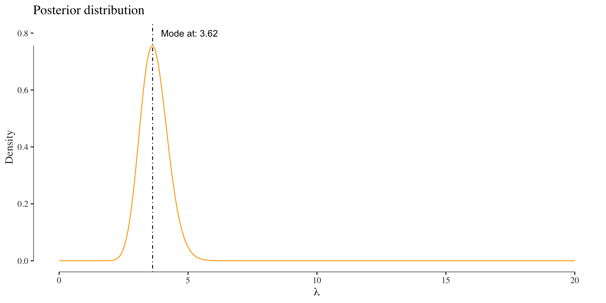

This document contains some short demos for a probabilistic models exercise. The demos are practical applications (maximum likelihood/optimization, Bayesian networks) of the content taught in the exercise to familiarize people with the the theoretical concepts. The demos are not necessarily exact reproductions of the exercises.
The binomial distribution models the number of successes \(k\) in \(n\) Bernoulli trials, each having a success probability of \(p\): \[ X \sim \text{Binom}(n, p) \] The easiest to understand what it is doing is to think of \(n\) coin tosses where every head is a success. The sum of the heads is the value of the Binomial random variable. A normal coin has a success probability of \(p = 0.5\). If we use an unfair coin, it might have a probability of landing on its head like \(p=0.3\) or \(p=0.8\). Let’s have a look how the distribution of sum of heads looks for different success probabilities \(p\) and \(10\) coin tosses:
Usually, however, we only observe a finite sample of which we don’t know its parameter, thus we need to guess them. What’s do you think is the parameter in the example below?
For this simulation I set the success probability to \(p = 0.7\), even though the data would imply \(p=0.8\) (just look at the largest bar and divide by size \(n=10\)). Thus, beware, since we mostly look at samples of small size, we sometimes make wrong guesses about the parameter of interest.
To find the maximum likelihood estimate - some guess - for \(p\) we can either set the derivative of the likelihood function to \(0\) (as we’ll do it in the exercise), or do it computationally. Let’s do the analytical derivation first. The likelihood we are interested in optimizing is given by:
\[ \mathcal{L}(p)= {n\choose k} p^k(1-p)^{n-k} \] Taking the log yields: \[ \ell(p) = \log {n \choose k}+k \log(p)+(n-k)\log(1-p) \] To obtain the MLE we need to derive \(\ell(p)\) and solve for zero: \[\begin{align} \ell'(p) & = \frac{k}{p} -\frac{n-k}{1-p} \stackrel{!}{=} 0 \\ \Rightarrow 0 & = \frac{k(1-p)-(n-k)p}{p(1-p)} = \frac{k-np}{p-p^2}\\ \Rightarrow p &=\frac{k}{n} \end{align}\]Computationally, we do the same. First, we define the likelihood:
binom.likelihood <- function(p, n, k)
{
dbinom(x=k, size=n, prob=p)
}Then we set some data:
tails <- 0
heads <- 1
tosses <- c(tails, heads, tails, tails, tails,
heads, heads, tails, heads, tails,
tails, heads, tails, tails, heads)
n <- length(tosses)
k <- sum(tosses == heads)Then we optimize the likelihood function, i.e., find its maximum. (For functions with multiple variables use optim). Usually we use the negative log-likelihood for optimization, and then find its minimum. The two approaches are however equivalent.
p.mle <- optimize(binom.likelihood,
interval=c(0, 1),
n=n, k=k,
maximum=TRUE)$maximum
cat(paste0("The MLE using 'optimize' of p=", p.mle))## The MLE using 'optimize' of p=0.399998229931391cat(paste0("The analytical solution for the MLE of p=", k/n))## The analytical solution for the MLE of p=0.4Plot the likelihood function and its maximum:
We can alternatively compute an estimate of \(p\) using a Bayesian approach. Here, we would think of our parameter as a random variable that has a ddistribution. Since we are looking at a parameter that has domain \(p = [0, 1]\) a reasonable prior could be a Beta distribution (because of its domain and the fact that it’s conjugate). The plot below visualizes the Beta distribution for some hyperparameter settings.
The difference here to the frequentist approach, among other things, is that our estimate of the parameter is again a distribution, the posterior. In this example we use a prior with hyperparameters \(a=0.5\) and \(b=0.5\). Since the Beta distribution is conjugate to the Binomial, the posterior will also be a Beta distribution:
posterior <- function(p, n, k)
{
dbeta(p, 0.5 + k, 0.5 + n - k)
}
posterior_values <- sapply(x, function(.) posterior(., n, k))Thus Bayesian inference of a parameter can be thought of as analysis of beliefs (Larry Wasserman), where we update our knowledge of some parameter (prior) in the context of data (giving us the posterior).
The Poisson distribution models the number of events \(k\) that happen in a fixed time-interval. It is usually parametrized by a mean value \(\lambda\): \[ X \sim \text{Pois}(\lambda) \] One (very abstract) example to think of the Poisson distribution is the number of bacterial colonies in different Petri dishes. On average we would expect to observe \(\lambda\) many colonies per dish, however due to stochasticity, such as food availability or space to grow the numbers per dish might vary.
Let’s visualize it again first.
As before we usually do not know the true parameter that governs the number of colonies, so we have to estimate it from a finite sample. And as before we choose to use the maximum likelihood estimator to find the mass function’s parameter which in this case is \(\lambda\).
Let’s again do the analytical derivation first. The likelihood we are interested in optimizing is given by:
\[ \mathcal{L} (\lambda) = \prod_{i=1}^n f(k_i; \lambda)= \prod_{i=1}^n \frac{\lambda^{k_i} e^{-\lambda}}{k_i!},\]
where \(k_i\) are the bacterial colonies per dish \(i\).
If we do this computationally we define the Poisson likelihood function, as before the Binomial. Here we have to take the product over all bacterial colonies:
poisson.likelihood <- function(x, colonies)
{
sapply(x, function(l) prod(dpois(x=colonies, lambda=l)))
}Then let’s evaluate the likelihood for \(3\) colonies and \(\lambda = 5\):
colonies <- 3
lik <- poisson.likelihood(5, colonies)
cat(paste0("The Likelihood for lambda=5 is: ", lik))## The Likelihood for lambda=5 is: 0.140373895814281NOTE: generally it is a bad idea to rely on the MLE with such a low sample size (here \(1\)). For that reason we use some example data for the next steps.
colonies <- c(1 ,2, 4, 5, 7, 2, 3, 5, 6, 3, 7, 2)Furthermore, since we compute products of probabilities, it makes sense to work in a log-space. Thus, we define the log-likelihood:
poisson.log.likelihood <- function(x, colonies)
{
sapply(x, function(l) sum(log(dpois(x=colonies, lambda=l))))
}Then let’s optimize the likelihood with the same procedure as before.
p.mle <- optimize(poisson.log.likelihood,
interval=c(0, 1000),
colonies=colonies,
maximum=TRUE)$maximum
cat(paste0("The MLE using 'optimize' of lambda=", p.mle))## The MLE using 'optimize' of lambda=3.916650518857We can quickly check if this is true, because the MLE of a Poisson distribution for \(\lambda\) is the mean of the colonies:
m.c <- mean(colonies)
cat(paste0("The mean of the colonies is: ", m.c))## The mean of the colonies is: 3.91666666666667That worked just fine. If you see differences in some of the digits after the comma, this is only due to numerical reasons. Nothing to worry about.
Let’s plot the likelihood function and its maximum again:
If you look at the y-axis you notice the small probability of the likelihood. Here we only used 10 colonies or so and the probability is already diminishingly small. For larger data sets our computers will have precision problems with such small probabilities. Thus we usually want to compute using the log-likelihood when probailities are involved.
As before, we could infer the parameters in a Bayesian fashion. In order to avoid sampling or variational approximations, we go with a conjugate prior again, which for a Poisson model is the Gamma distribution:
The assume a Gamma prior with shape \(\alpha = 1\) and scale \(\beta = 1\). The posterior is then computed as:
posterior <- function(lambda, d)
{
dgamma(lambda, 1 + sum(d), 1 + length(d))
}
posterior_values <- sapply(x, function(.) posterior(., colonies))
Finding the stationary distribution of an MC, is essentially an Eigenvalue problem, where we look for the left Eigenvectors of a transition matrix for the Eigenvalue \(1\).
First, we setup the transition matrix:
T <- matrix(c(.4, .9, .6, .1), ncol=2)Now, we need to find the left Eigenvectors of T. This is equivalent to finding the right Eigenvectors of the transpose of T: t(T). The stationary distribution is unique for ergodic Markov chains and independent of the starting distribution.
ev <- eigen(t(T))
ev## eigen() decomposition
## $values
## [1] 1.0 -0.5
##
## $vectors
## [,1] [,2]
## [1,] 0.8320503 -0.7071068
## [2,] 0.5547002 0.7071068eigen.values <- ev$vectors[,which(ev$values == 1)]We find the stationary distribution by normalizing the respective eigenvector to sum to 1.
stationary.distribution <- eigen.values / sum(eigen.values)
stationary.distribution## [1] 0.6 0.4To work with Bayesian networks we first load some libraries:
library(bnlearn)
library(tibble)Then, we create the data just as in the exercise:
df <- data.frame(
A = as.character(c(0, 0, 0, 1, 1, 0, 1, 1, 1)),
B = as.character(c(0, 0, 0, 1, 0, 0, 1, 0, 0)),
C = as.character(c(0, 0, 0, 1, 1, 0, 1, 0, 0)),
D = as.character(c(0, 0, 0, 1, 1, 1, 1, 0, 1)),
E = as.character(c(0, 1, 1, 0, 0, 1, 0, 1, 1))
)
as.tibble(df)## # A tibble: 9 x 5
## A B C D E
## <fct> <fct> <fct> <fct> <fct>
## 1 0 0 0 0 0
## 2 0 0 0 0 1
## 3 0 0 0 0 1
## 4 1 1 1 1 0
## 5 1 0 1 1 0
## 6 0 0 0 1 1
## 7 1 1 1 1 0
## 8 1 0 0 0 1
## 9 1 0 0 1 1We define the Bayesian network structure also as in the exercise (we could also learn this from the data):
dag <- empty.graph(toupper(letters[1:5]))
arc.set <- matrix(
c("A", "B", "A", "D", "B", "C", "E", "B"),
ncol = 2, byrow = TRUE,
dimnames = list(NULL, c("from", "to")))
arcs(dag) <- arc.set
plot(dag)Then, we compute the local probability tables (the parameters):
fit <- bn.fit(dag, df)
fit##
## Bayesian network parameters
##
## Parameters of node A (multinomial distribution)
##
## Conditional probability table:
## 0 1
## 0.4444444 0.5555556
##
## Parameters of node B (multinomial distribution)
##
## Conditional probability table:
##
## , , E = 0
##
## A
## B 0 1
## 0 1.0000000 0.3333333
## 1 0.0000000 0.6666667
##
## , , E = 1
##
## A
## B 0 1
## 0 1.0000000 1.0000000
## 1 0.0000000 0.0000000
##
##
## Parameters of node C (multinomial distribution)
##
## Conditional probability table:
##
## B
## C 0 1
## 0 0.8571429 0.0000000
## 1 0.1428571 1.0000000
##
## Parameters of node D (multinomial distribution)
##
## Conditional probability table:
##
## A
## D 0 1
## 0 0.75 0.20
## 1 0.25 0.80
##
## Parameters of node E (multinomial distribution)
##
## Conditional probability table:
## 0 1
## 0.4444444 0.5555556With this, we are finally able submit some queries find the maximum conditional probability as in the exercise:
cpquery(fit, (A == "1"), (C == "1"))## [1] 0.7829932 cpquery(fit, (A == "0"), (C == "1"))## [1] 0.2167027 cpquery(fit, (E == "1"), (C == "1"))## [1] 0.2772495 cpquery(fit, (E == "0"), (C == "1"))## [1] 0.7165021
© S. D. (GitHub)